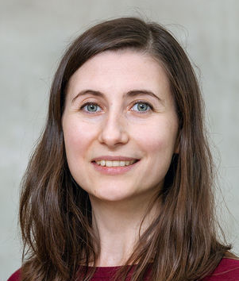

|

|
Oana Inel
University of Zurich
Binzmühlestrasse 14
CH-8050 Zürich
Switzerland
Email: inel@ifi.uzh.ch
|
Since 2022, I work as a Postdoctoral Researcher in the
Dynamic and Distributed Information Systems Group, Department of Informatics at the University of Zurich.
Before that, I was a Postdoctoral Researcher in the
Web Information Systems group at Delft University of Technology, working on the Responsible Data Science track in the
Digital Society research programme. I was also a visiting researcher at the
User Centric Data Science group, Computer Science department at Vrije Universiteit Amsterdam. Before joining TU Delft on 1st of January 2019, I was a PhD student in the
User Centric Data Science group at Vrije Universiteit Amsterdam, under the supervision of prof.dr.
Lora Aroyo.
My research focused on understanding events and their semantic representation across various data types (text, image, video) and different domains (history, politics). This also includes understanding the role of events with respect to other types of entities, such as places, people, time expressions, as well as detecting their contextual relevance, salience or novelty. To realize this, I applied a number of computer science technologies, such as, natural language processing (NLP), semantic modeling, human computation, machine learning.
During my PhD I was awarded two times the IBM PhD Fellowship (2016-2017, 2017-2018).
I performed my research in the context of two projects:
-
CrowdTruth: novel approach for crowdsourcing ground truth data by harnessing the inter-annotator disagreement, i.e, representing the diversity of human interpretations, instead of enforcing agreement between annotators. The project was developed in collaboration with IBM.
-
DIVE+: a linked-data digital collection browser aimed at providing an integrated and interactive access to multimedia objects from various heterogeneous online collections. As part of the DIVE+ project I'm also involved in Clariah (Common Lab Research Infrastructure for the Arts and Humanities). In this research infrastructure, next to other media studies research tools, DIVE+ aims at supporting the media studies researchers and scholars by providing access to digital data and tools.